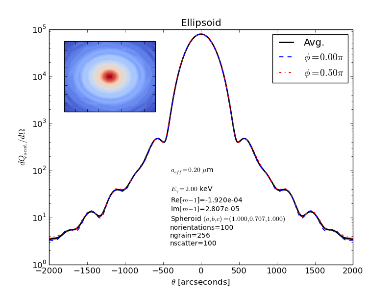
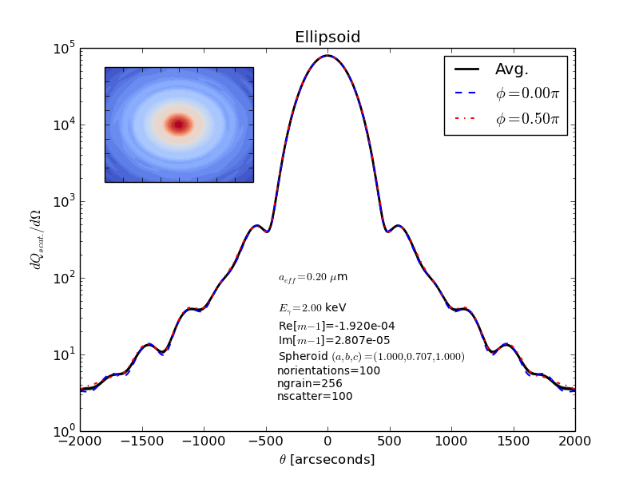

Next: Testing against previous results, Previous: Invoking GGADT, Up: Top [Contents][Index]
<style> img {text-align:center;} </style>
If you simply want to test that ggadt is running properly, you can simply do
src/ggadt
From the parent directory. This will solve a test case, which is defined by the default parameters set by the .defaults file:
# Default parameters used by GGADT
# ================================
# Last modified by John Hoffman (June 26, 2014)
# Geometry of grain
# | one of: 'sphere','spheres' (or 'agglomerate'), or 'ellipsoid'
grain-geometry = 'ellipsoid'
verbose = F
use-efficiencies = T
use-padded-fft = F
integrated = F
do-full-2d-fft = F
force-numerical = F
axes-convention = 'ddscat'
# effective radius (radius of sphere with same volume)
aeff = 0.2
# Number of grid elements (along one dimension) to resolve grain
ngrain = 128
# IF grain-geometery=ellipsoid (these are all ratios)
grain-axis-x = 1.0
grain-axis-y = 1.0
grain-axis-z = 1.0
# IF grain-geometry=agglomerate
agglom-file = ''
agglom-composition-file = ''
# Grain composition
# Path to material index file
# material-file = "/Users/jah5/Desktop/Draine_temp/GGADT_JohnsMac/ggadt/data/materials/index_silD03"
# parameters for differential scattering cross section calculation
# units: keV
ephot = 2.0
# Re(m-1)
#ior-re =-1.920E-4
# Re(m)
#ior-im = 2.807E-5
# |
# | DO NOT define ior-re or ior-im if you also have defined
# | a material-file and 'ephot'. It will pull m(E) automatically.
# |
## number of angles to calculate diff. scat. cross section (ntheta) or spacing between them (dtheta)
# (arcseconds) Choose only one of these parameters
dtheta = 25.0
#nscatter = 100
## Maximum angle for which the diff. scat. cross section is calculated
# (arcseconds)
max-angle = 1500.
# IF compiled with --enable-fftw3
fftw-optimization = 'estimate'
#grain_axis_ratio = 1.0
rotation-axis = 'none' # For ellipsoidal or agglomerate grains
angle-mode = 'random' # Either 'sequential', 'random' or 'file'
# | tells GGADT how to choose orientations over which to average
# | calculations.
angle-file = '' # If angle-mode='file'; Path to file listing angles
# | over which to average calculations
norientations = 64
# If angle-mode is NOT 'file'; number of orientations
# | over which to average calcuations
# For integrated cross section (pass --integrated flag)
# number of photon energies to calculate integrated cross sections
#nephots = 100
# | OR define energy spacing
dephot = 0.1
# minimum photon energy
ephot-min = 0.1
# maximum photon energy
ephot-max = 5.0
If you would like to plot the output of this code, pipe the standard output of ggadt to a file of your choice. Then run the python plotting scripts:
src/ggadt > output.dat python scripts/plot.py output.dat
This will display two plots. One plot shows the full 2D cross-scattering efficiency. The other shows: (1) a phi-averaged plot of the differential cross-section efficiency (2) a slice of the full 2D grid at phi=0.0 and phi = pi/2 (3) the one-sigma RMS fluctuations over phi (in light green) and the max/min values over phi (in light grey).
make_sample_plots.pyWe have made a small python script (scripts/make_sample_plots.py) that runs example cases for different grain geometries. You will need the matplotlib, numpy and scipy libraries in order to run this script. More information about these libaries is available at http://scipy.org/getting-started.html.
The python script runs GGADT for a grain with an effective radius of 0.2 microns, composed of MgFeSiO_4 silicate, with an incident photon energy of 2.0 keV, and with ngrain of 256 and a nscatter of 100.
The inset within the plot, on the upper left corner, shows the full 2d grid of the scattering cross section efficiency.

WARNING – this section is obselete, and the rotation-axis parameter should be avoided. Spinning grains will be handled in future versions of GGADT.
GGADT allows you to specify a general, ellipsoidal (tri-axial) grain through the input options --grain-axis-x,y,z=val. These specify the relative lengths of the three principal axes of the grain. These axes lengths are then normalized so that the effective radius of the grain is consistent with the --aeff parameter.
If you wish to calculate orientationally-averaged quantities of a grain about a principal axis, GGADT allows you to do this through specifying --rotation-axis=xaxis,yaxis,zaxis,none. The --rotation-axis parameter is ’none’ by default.
The --rotation-axis parameter will work for grain agglomerates as well. The positions of the agglomerates as specified in the agglomerate file define the coordinate system that GGADT works in. Be sure the axis you specify via --rotation-axis is really the axis you want. You’ll have to know something about how the coordinate system of the agglomerate file is defined.
If you are using an ELLIPSOID grain geometry, the coordinate system is such that the z-axis points towards the observer (i.e. the incident photons’ direction of propagation), and the x and y directions are defined by the --grain-axis-x,y,z input parameters.
Currently, there is no option to specify a custom rotation axis about which to orient the grain. If this is something you would like added to GGADT, let John Hoffman know.
Below are the results from running GGADT on a prolate spheroid (with axes ratios 2:1:1), with the grain’s x-axis being the longest.
Orientation-averaged differential scattering efficiency about the x-axis
src/ggadt --grain-axis-y=0.5 --grain-axis-z=0.5 --grain-geometry=ellipsoid --rotation-axis=xaxis > outputx.dat python scripts/plot.py outputx.dat

Orientation-averaged differential scattering efficiency about the y-axis
src/ggadt --grain-axis-y=0.5 --grain-axis-z=0.5 --grain-geometry=ellipsoid --rotation-axis=yaxis > outputy.dat python scripts/plot.py outputy.dat

Orientation-averaged differential scattering efficiency about the z-axis
src/ggadt --grain-axis-y=0.5 --grain-axis-z=0.5 --grain-geometry=ellipsoid --rotation-axis=zaxis > outputz.dat python scripts/plot.py outputz.dat

Next: Testing against previous results, Previous: Invoking GGADT, Up: Top [Contents][Index]